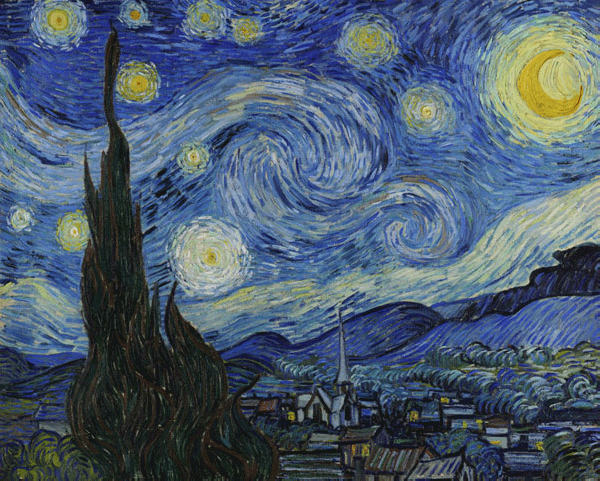
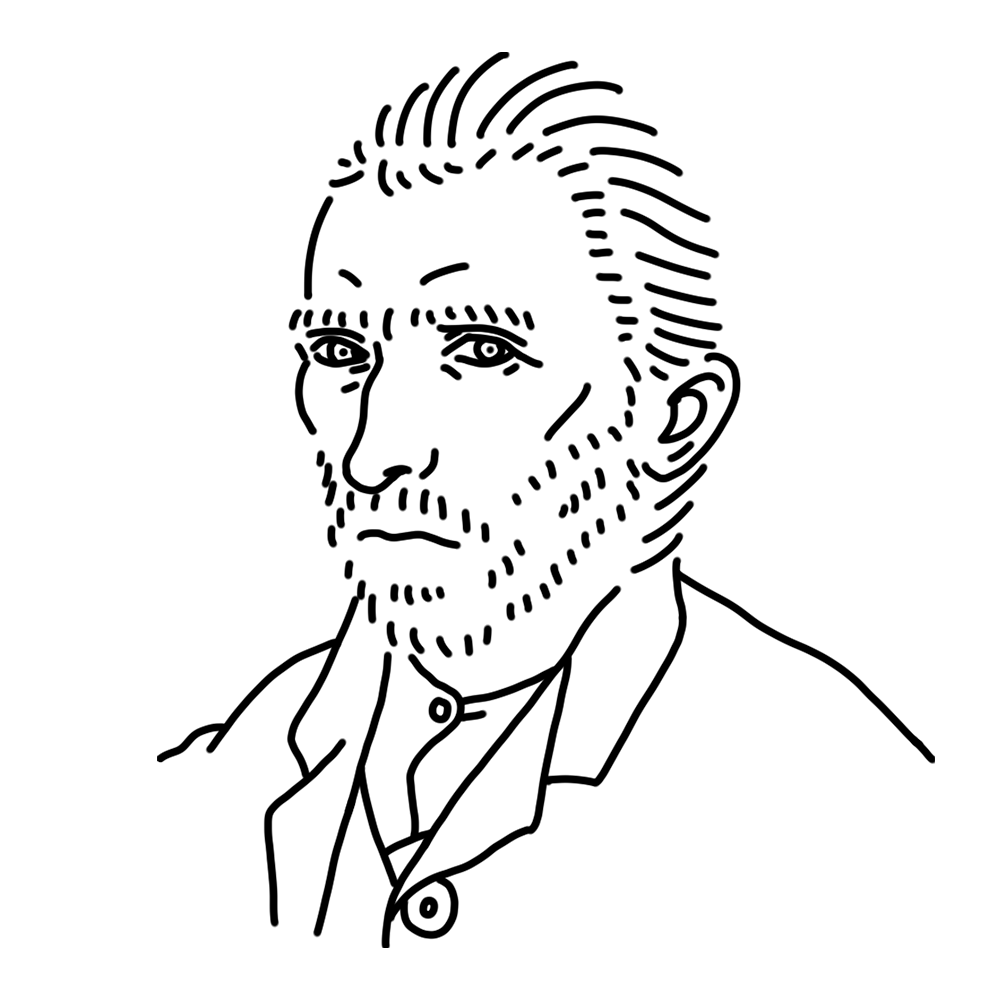

She was a muse of post-impressionism, and her intense style and life had a huge influence on later Western art. She is sometimes misunderstood because she is too pure, but her passion for art is unmatched. Despite her appearance, she responds promptly to messages.
Netherlands
"Sunflowers"
"The Starry Night"
"Café Terrace at Night" etc.

Van Gogh, who was recuperating in a psychiatric hospital, painted this painting based on the scenery he saw from the window of his ward. However, most of the painting is fictional. The swirling starry sky, painted with undulating brushstrokes, is a masterpiece. Although Van Gogh was apparently not satisfied with the result, this painting is a representative work of Van Gogh himself, post-impressionism, and even modern art history.
Year
1889
Medium
Oil on canvas
Dimension
73.7 cm x 92.1 cm
Collection
Museum of Modern Art, New York (USA)

He is one of Japan's most well-known post-impressionist painters. Even those unfamiliar with art know the story of how he barely sold any paintings during his lifetime. His undulating brushstrokes, fantastical use of color, and relentless pursuit of art had a profound influence on artists of later generations. Due in part to the influence of biographical films, he is often thought of as a "mad painter," but the many letters he left behind reveal the image of a troubled, innocent young man.
Vincent Willem van Gogh
March 30, 1853
July 29, 1890(aged 37)